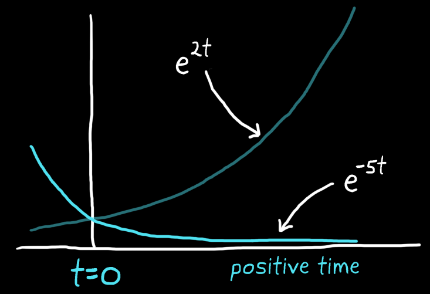
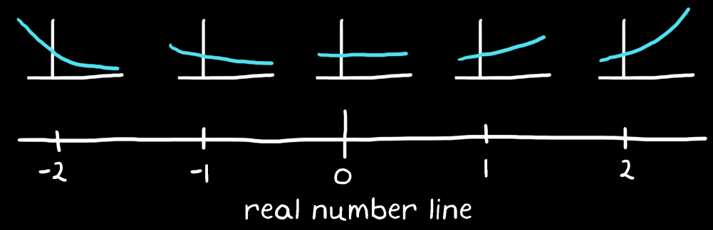

Exponential functions that have imaginary exponents, such as $e^{j2t}$, produce 2D sinusoids through Euler's formula:
$$
e^{j\omega t} = cos(\omega t)+ jsin(\omega t)
$$
Real exponents
For exponential functions that have real numbers for exponents:
Negative real numbers indicate exponentially decaying signals
Positive indicate exponentially growing signals

$$
f(\sigma) = e^{\sigma t}
$$
$\sigma$ represents a real number.

$e^{\sigma t}$ produces exponential functions that change with $\sigma$
As with $\omega$, $\sigma$ gives a way to define a location on a real number line that corresponds to a particular exponential function. As a signal moves away from the origin, the absolute value of the real number becomes larger and thus the signal decays or grows at a faster rate.